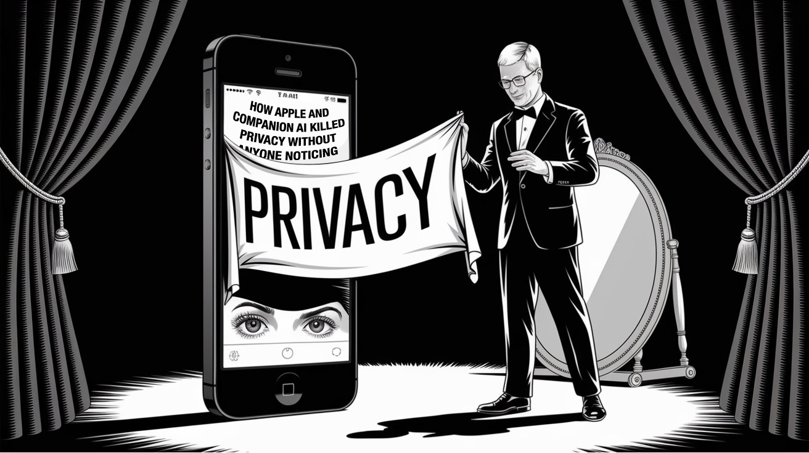

:: Now begins a story...
May I present to you, a finely curated section of a fine collection of the wonderful web we weave with a weekly roundup of bits and pieces from the far corners of the super information highway that I like to call — Token Wisdom ✨


Innovation distinguishes between a leader and a follower.

Editor's Notes 📆
Week 10 of 52 // March 2th 🧿 8th, 2025
Welcome to the 98th edition! This week, we're exploring a shifting landscape in the tech world, where traditional powerhouses face new challengers and AI continues to reshape industries. Our curated selection delves into the rise of RISC-V architecture, the evolving focus of AI investments, and groundbreaking discoveries in neuroscience and physics.
This week's highlights include a startup's ambitious plan to challenge Intel with RISC-V technology, the pivot of AI investments from chips to software, and intriguing developments in our understanding of human intelligence and free will. We also explore advancements in defense technology, the concept of "third places" in society, and the creation of exotic states of matter using light.
Whether your interest lies in the future of computing architecture, the economics of AI, or the philosophical implications of neuroscience research, you're in for an enlightening read. Join us as we navigate the cutting edge of technological innovation, scientific discovery, and cultural shifts in this week's captivating edition.
Listen to Google's NotebookLM Duo cover this week's Pearls of Wisdom:


Enjoy The Newest Latest, A Closer Look & Time Well Spent!

🎉 Newest / Latest
100% Authentic Humanly Chosen

Silicon Shifts & Cognitive Leaps: Navigating the Evolving Tech Landscape
RISC-V architecture gains momentum as Intel alumni aim to challenge their former employer. AI investment focus shifts from chips to software companies. Neuroscience research offers new insights into human intelligence and memory formation. The debate over free will continues in light of new studies. Defense tech startups secure significant funding for anti-drone weapons. The concept of "third places" gains attention in social studies. Scientists create a new state of matter called "supersolid" using laser light.
- Former Intel Engineers Launch RISC-V Startup to Challenge IntelAheadComputing, formed by Intel alumni, aims to become the "Arm of RISC-V" with potential IP licensing model. Read more
- AI Investment Focus Shifts from Chips to SoftwareAs chip stocks struggle, investors are turning their attention to software companies as the next big AI play. Learn more
- New Study Sheds Light on Human Memory FormationResearch reveals how neurons store memories independently of context, offering insights into the foundations of human intelligence. Discover the details
- Tech Leaders Warn Against "Manhattan Project" Approach to AIEric Schmidt and others caution about treating the global AI arms race like the Manhattan Project. Examine the controversy
- Neuroscientists Urge Caution in Interpreting Free Will StudiesExperts argue for setting a high bar for evidence against free will in neuroscience research. Understand the debate
- Defense Tech Startup Secures $250 Million for Anti-Drone WeaponsEpirus raises significant funding to develop and supply anti-drone technology to the U.S. Army. Read the breakthrough
- The Importance of "Third Places" in SocietyExploring the concept of spaces beyond home and work for community gathering. See the study
- Scientists Create "Supersolid" State of Matter Using LightResearchers transform light into a new state of matter that behaves like both a solid and a fluid. Explore the innovation
- Hugging Face Co-Founder Challenges Anthropic CEO's AI VisionDebate emerges over the future direction of AI development and its impact on scientific breakthroughs. Harness the technology
- Anthropic CEO Discusses AI Endgame ScenariosDario Amodei shares insights on the potential future impacts of advanced AI systems. Understand the impact
*CAUTION: Side effects may include spontaneous debates with your smart fridge about the ethics of AI and an irresistible urge to explain RISC-V architecture to unsuspecting houseplants.
*This extraordinary forecast is powered by the Interdimensional Institute of Improbable Statistics and verified by a panel of time-traveling data scientists and one particularly prescient parakeet using their proprietary neural network fueled by exotic dark matter and a dash of cosmic irony.
👁️ A Closer Look
Attempts to explore a subject and share my thoughts.

How Apple and Companion AI Killed Privacy Without Anyone Noticing
While you fought over encryption, Big Tech pulled off the greatest surveillance sleight-of-hand. Your iPhone isn't just watching—it's redefining privacy itself. And Apple, once privacy's champion, just became its greatest threat.
 🌶️ iamkhayyam
🌶️ iamkhayyam
A Closer Look: Explorations in Technology
Weekly essay in the areas of blockchain, artificial intelligence, extended reality, quantum computing, and all the bits and pieces.

A Closer Look: Explorations in Technology
Weekly essay in the areas of blockchain, artificial intelligence, extended reality, quantum computing, and all the bits and pieces.


📺 Time Well Spent
Top Ten of the Time I Spend

Biomimetic Breakthroughs & Quantum Quandaries: Navigating the Frontiers of Innovation
This week's videos take you on a journey through the forefront of AI and robotics innovation. From groundbreaking advances in biomimetic humanoids to powerful AI-driven workflows, we span diverse topics. Explore the future of human-like robots, the potential of personal AI assistants, and the latest in AI development platforms. These selections challenge perceptions in tech, robotics, and even personal productivity, capturing the interest of tech enthusiasts and futurists alike.
- Meet The FIRST WATER POWERED Biomimetic AI HumanoidWitness the groundbreaking Clone Alpha, an AI-powered humanoid that replicates biological functions using water power. Watch the video
- Claude Code + MCP Servers = INSANE Powerful Workflows!Discover how combining Claude Code with MCP Servers can create incredibly powerful AI-driven workflows. Explore the possibilities
- I trained an AI to think like me — here's what happenedFollow one tech enthusiast's journey of fine-tuning a local LLM on their personal knowledge base. See the results
- You've Never Seen AI Like ThisExplore SenseCAP Watcher, an AI-powered, open-source physical agent designed for spatial intelligence. Witness the innovation
- Hackers targeting signal, whatsapp, and teamsLearn about new phishing attacks targeting popular communication platforms and how to protect yourself. Stay informed
- Google AI studio replaces your AI tech stack (full demo)See how Google's new AI studio could potentially replace your entire AI technology stack. Watch the demo
- I Compared 7 AI Phone Caller PlatformsA comprehensive comparison of various AI-powered phone calling platforms. Discover the differences
- A Message From Your Future SelfAn intriguing and eerie exploration of life lessons and future perspectives. Experience the message
- First look at new.emailGet an early glimpse of a new platform for building beautiful, responsive, and cross-platform emails. Preview the future of email
- Introducing HelixLearn about Helix, a generalist Vision-Language-Action (VLA) model unifying perception, language understanding, and learned control. Explore the capabilities
*This unexpected phenomenon was documented by the prestigious Institute of Improbable Technological Occurrences, authenticated by a panel of sentient chatbots and one particularly sarcastic quantum computer.
CAUTION: Refrain from attempting to train your houseplants in natural language processing or challenging your refrigerator to a game of 4D chess unless certified by the Whimsical AI Interaction Society. The experts at DARPA have not confirmed these findings as they're currently occupied with teaching a swarm of nanobots to perform improvisational jazz.

✨Token Wisdom
Knowledge Transmuted
In this edition of Token Wisdom, we've explored where groundbreaking AI and robotics intersect with unexpected cultural phenomena in The Newest Latest on Side A. Our journey on the flip side was Time Well Spent and has highlighted both technological innovations and the surprising evolution of AI capabilities into everyday applications.
This week's edition underscores the rapid advancement of AI and its integration into various aspects of technology and daily life. We've delved into AI advancements pushing the limits of human understanding, from biomimetic humanoids to personalized AI assistants. Major strides in AI-powered workflows and spatial intelligence showcase the growing capabilities in problem-solving and environmental interaction.
Digital innovations are reshaping how we interact with technology, exemplified by AI-driven communication platforms and email design tools. Amid rapid tech advancement, ethical considerations remain vital, as seen in discussions about AI security and the potential societal impacts of advanced AI systems.

🌈💫 The Less You Know
The More You Learn
Latest Technologies & Innovations:
- RISC-V Architecture: Gaining momentum as a potential challenger to traditional x86 and ARM architectures.
- Biomimetic AI Humanoids: Water-powered robots replicating biological functions with AI integration.
- AI-Powered Workflows: Combining language models like Claude with powerful servers for enhanced productivity.
- Personalized AI Assistants: Fine-tuning local language models on personal knowledge bases.
- Spatial Intelligence Agents: Open-source AI systems designed for real-time monitoring and anomaly detection.
- AI-Driven Communication Platforms: Advanced systems for automated phone calling and customer interaction.
- Next-Gen Email Design: New platforms for creating responsive and cross-platform email content.
- Vision-Language-Action Models: AI systems unifying perception, language understanding, and learned control.
- Supersolid State of Matter: Created using laser light, behaving as both solid and fluid.
- Anti-Drone Weapons: Advanced defense technology for countering unmanned aerial threats.
Most Important Topics:
- AI Investment Shift: Focus moving from hardware (chips) to software companies in the AI sector.
- Neuroscience of Memory: New insights into how neurons store memories independently of context.
- AI Ethics and Development: Debates over the future direction and potential impacts of advanced AI systems.
- Free Will in Neuroscience: Ongoing discussions about interpreting neuroscientific data related to free will.
- "Third Places" in Society: Exploration of spaces beyond home and work for community gathering.
- AI in Scientific Breakthroughs: Questioning AI's role in generating revolutionary scientific thinking.
- Tech Giants' AI Visions: Contrasting perspectives from leaders at companies like Anthropic and Hugging Face.
- AI Security Concerns: New phishing attacks targeting popular communication platforms.
- AI Development Platforms: Google's AI studio potentially replacing entire AI tech stacks.
- Future of Computing: RISC-V startups challenging established players like Intel.
Acronyms:
- RISC-V - Reduced Instruction Set Computer-V (open standard instruction set architecture)
- AI - Artificial Intelligence
- LLM - Large Language Model
- VLA - Vision-Language-Action (in context of AI models)
- MCP - Master Control Program (in context of server systems)
- VPN - Virtual Private Network
- IP - Intellectual Property (in context of licensing models)
- CEO - Chief Executive Officer
- DARPA - Defense Advanced Research Projects Agency
- 4D - Four-Dimensional
Technical Terms:
- Biomimetic: Imitating biological systems or processes in technology design.
- Fine-tuning: Process of adapting a pre-trained AI model to a specific task or dataset.
- Spatial Intelligence: AI capability to understand and interact with physical environments.
- Supersolid: A phase of matter with properties of both solids and superfluids.
- Anti-Drone Weapons: Systems designed to detect, track, and neutralize unmanned aerial vehicles.
- IP Licensing Model: Business approach where a company licenses its intellectual property to others.
- Neural Networks: Computing systems inspired by biological neural networks in animal brains.
- Quantum Computing: Computing using quantum-mechanical phenomena like superposition and entanglement.
- Machine Learning: Subset of AI focused on the development of algorithms that improve through experience.
- Natural Language Processing (NLP): Branch of AI dealing with the interaction between computers and human language.
Just because Jon Snow knows nothing, doesn’t mean you have to.
Embrace the pursuit of knowledge to shape a better tomorrow. Sign up for more Token Wisdom and carry the torch of foresight into the fathomless domains of innovation and beyond.
Until next time: stay smart, and kind, and definitely stay weird!
Become a Token Wisdom subscriber
Illuminate your inbox with the light of knowledge. ✨

Thank you for cruising by the Cult of Innovation
We’re making some Stone Soup here. If you enjoyed this amuse-bouche of news compilations in bite-sized morsels, please share it with your friends and help feed a community. Mmmm. #nomnom.